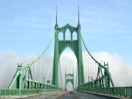
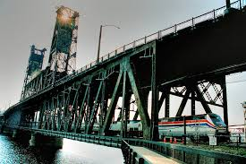
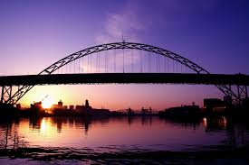

Bridges of Portland
Here are three examples of famous bridges in Portland, Oregon.
St. Johns

- The St. Johns Bridge is a steel suspension bridge that spans the Willamette River in Portland, Oregon, USA, between the St. Johns neighborhood
and the northwest industrial area around Linnton.
- It is the only suspension bridge in the Willamette Valley and one of three public highway suspension bridges in Oregon.
- You can read more about the St. Johns Bridge here.
Steel Bridge

- The Steel Bridge is a through truss, double-deck vertical-lift bridge across the Willamette River in Portland, Oregon, United States, opened in 1912.
- Its lower deck carries railroad and bicycle/pedestrian traffic, while the upper deck carries road traffic (on the Pacific Highway West No. 1W, former Oregon Route 99W) and light rail (MAX),
making the bridge one of the most multimodal in the world.
- You can read more about the Steel Bridge here.
Fremont Bridge

- The Fremont Bridge is a steel tied-arch bridge over the Willamette River located in Portland, Oregon.
- It carries Interstate 405 and US 30 traffic between downtown and North Portland where it intersects with I-5.
- It has the longest main span of any bridge in Oregon and is the second longest tied-arch bridge in the world
(after Caiyuanba Bridge across the Yangtze River, China).
- You can read more about the Fremont Bridge here.
To learn more about the bridges of Portland, visit this link. Thanks for stopping by!